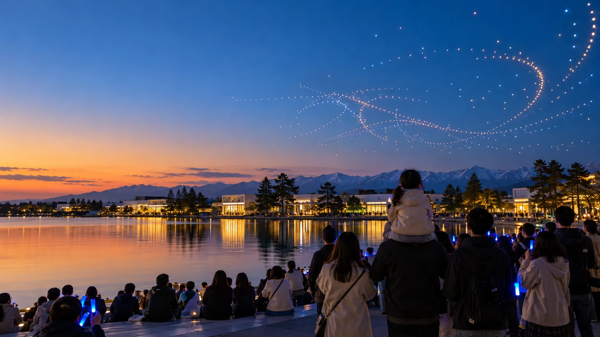

ショー SHOWS
光と感動が、空を彩る。
FEATURED SHOW
夜空を彩る、光のフィナーレ。
SKYLIGHT PARADE
中央湖の水上ラグーンを舞台に、噴水と光、ドローンが夜空まで物語を描くフィナーレショー。音楽に合わせて、水と空がひとつになります。
- 開催時刻
- 毎日 20:00
- 場所
- 中央湖の水上ショー会場（ラグーン）
- 所要時間
- 約20分
OTHER SHOW
ステージのショー
ORBIT STAGE
光と音楽に包まれた屋根付きの野外ステージで、ダンサーたちが華やかなパフォーマンスを披露します。湖畔の風を感じながら、迫力あるステージを間近でお楽しみください。
- 開催時刻
- 1日4回（11:00／13:30／15:30／18:00）
- 場所
- SKYLIGHT PARADE 会場の隣（屋根付きステージ）
- 所要時間
- 約25分
SHOW GUIDE
観覧の案内
- 観覧エリア
- SKYLIGHT PARADE は中央湖のほとり、ORBIT STAGE はステージ前の専用エリアからご覧いただけます。
- 座席・立ち見
- 自由席と立ち見があります。座席の予約はありません。
- 観覧の支援
- 車いすで観覧できるエリアがあります。字幕の表示に対応しています。
- 時刻の確認
- 公演時刻は変わることがあります。両ショーは屋外で開催するため、天候などにより内容の変更や中止となる場合があります。
NEXT
次は、どこへ行こう。
ショーの前後に、食事や宿泊、来園の計画もチェックしよう。